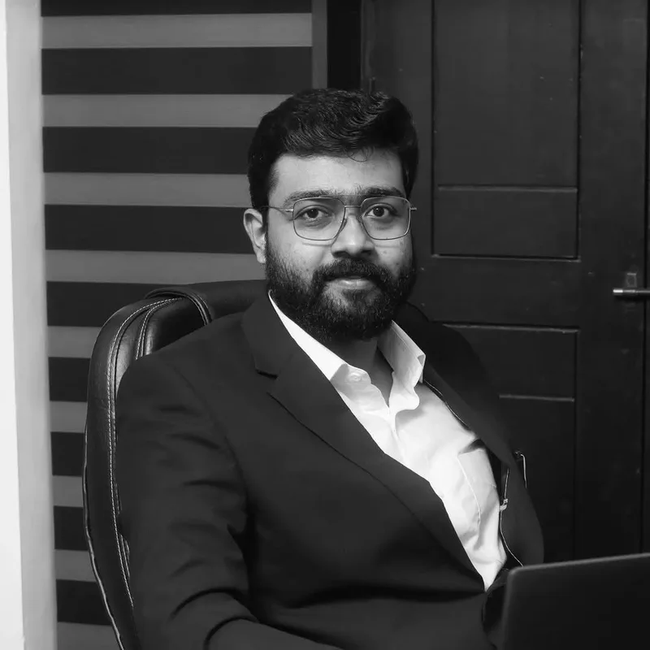

Adv. Nihal Kottalath
Nihal Kottalath is a practicing advocate and Co-founder of Sentinel Law Practitioners, with a diverse practice spanning property law, real estate transactions, conveyancing, title verification, document registration, family law, criminal litigation and legal advisory services. He advises individuals, families, businesses, developers, financial institutions and non-resident Keralites (NRIs) on a wide range of legal and transactional matters.
His practice focuses on property due diligence, title investigation, real estate documentation, registration support, lease and conveyancing matters, family disputes, criminal defence and strategic legal advisory. Known for his meticulous attention to detail and practical approach, Nihal helps clients navigate complex legal and transactional challenges with confidence and clarity.